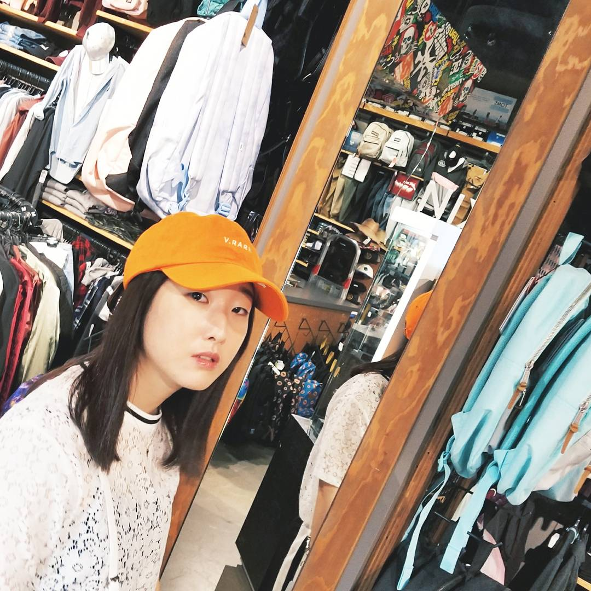

<dom-module id="herin-about">
  <template>
    <style>
      :host {
        @apply(--layout-vertical);
      }
      .flex-center-justified {
        @apply(--layout-horizontal);
        @apply(--layout-center-justified);
      }
  		.flex-equal-justified {
  		  @apply --layout-horizontal;
  		  @apply --layout-justified;
  		}	 
      .flex-equal-around-justified {
        @apply --layout-horizontal;
        @apply --layout-around-justified;
      } 
      .about {
        margin-top: 70px;
        width: 90%;
      }
      .artwork-text {
        font-family: "Inconsolata", "Input Mono Narrow", "Helvetica Neue", Arial, Helvetica, sans-serif; 
      }
      .author {
        font-size: 20px;
        line-height: 2.7em;
        font-weight: bold;
      }
      .herin-photo {
        margin-left: 20%;
        width: 55%;
      }
      .description {
        margin-top: 0%;
        margin-left: -10%;
        margin-right: 5%;
        width: 40%
      }
      .hello-image {
        width: 100px;
      }
    </style>

    <div class="about">
      <div class="flex-equal-around-justified artwork-text">
        <div class="photo"></div>
        <div class="description"><span></span><br/><br/>I’m a NY based graphic designer attending Parsons The New School for Design. Currently, I am back in Albany for the fall semester and seeking an internship. Feel free to reach out by email for any open opportunities, or just to grab coffee.</div>
      </div>
      <br/>
    </div>  	  
  </template>
</dom-module>
 
<script>
               
  Polymer({
      is: 'herin-about',

      properties: {
      },

  		attached: function() {
  			console.log("About page is ready.");
  		}
  });

</script>
 

 
